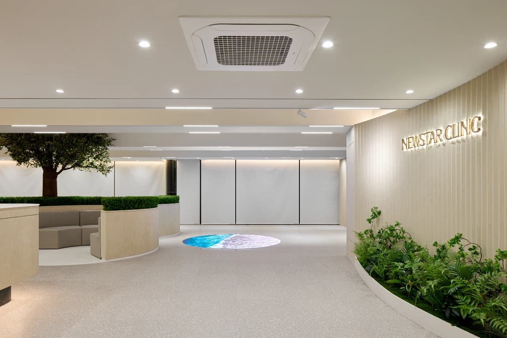
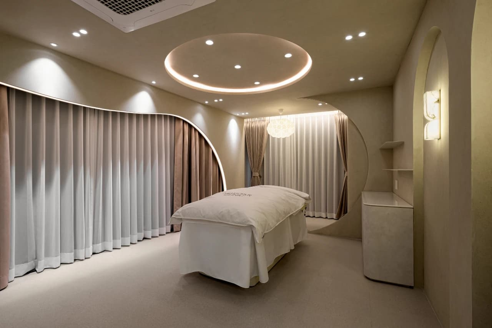
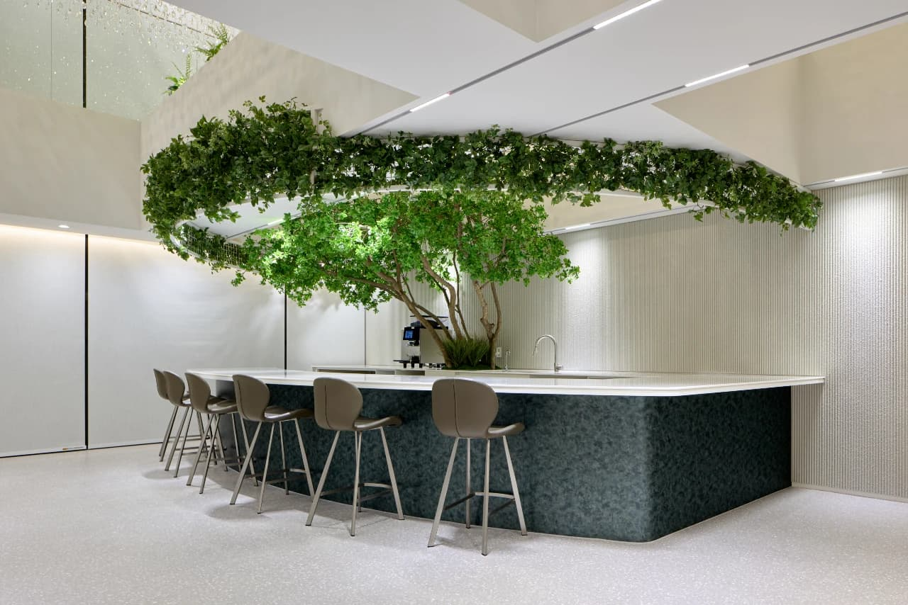

I flew to Seoul six days before fashion week at Dongdaemun Design Plaza. Not for the shows. For my face. I had three appointments booked at Newstar Clinic in Gangnam: botox, Design Filler, and laser lifting. This is what happened.
Everyone I know in fashion who travels to Seoul does the same thing. You land a week early, you go to Gangnam, you walk into one of the clinics that line the avenues south of the river, and you walk out looking like a better-rested version of yourself. The rest of the world is still catching up to what Seoul has been doing for two decades. I wanted to see why.
Arrival
B722 Building, Gangnam-daero. Newstar Clinic occupies floors 11 to 14. Courtesy of Newstar Clinic
Seocho-gu, Gangnam-daero 531. The B722 Building rises in pale concrete and glass, unremarkable from the street. The elevator opens on the eleventh floor into something else entirely. The reception is hushed, immaculate, full of greenery. The words NEWSTAR CLINIC glow in gold lettering on the far wall. A woman in a crisp uniform handed me a tablet for check-in. I had booked my consultation through WhatsApp three weeks earlier.

Reception lobby at Newstar Clinic, Gangnam. Courtesy of Newstar Clinic
The consultation
Dr. Kang Geon-woo during a Design Filler consultation. Courtesy of Newstar Clinic
Dr. Kang Geon-woo founded Newstar after studying at Konkuk University College of Medicine. He has personally placed more than 300,000 cubic centimetres of filler. When he sat down across from me, he studied my face the way an architect studies a façade. He did not ask what I wanted. He told me what he saw.
The forehead had lost volume along the temples. The mid-face was beginning to flatten. Fine lines around the eyes were deepening on one side more than the other. He drew on a tablet while he talked, mapping ratios across my bone structure. Korean aesthetics, he explained, thinks in proportion and geometry. The goal is never volume. The goal is balance.
His recommendation: botox across the forehead and crow’s feet to soften the lines. Design Filler — the clinic’s signature technique — along the temples, cheekbones, and jawline to restore structural balance. And a session of laser lifting to tighten the skin and stimulate collagen. Three procedures. One afternoon. Five days to settle before the shows at DDP.
He studied my face the way an architect studies a façade. He did not ask what I wanted. He told me what he saw.
Camille AshworthThe treatment room

Treatment suite at Newstar Clinic, Gangnam. Courtesy of Newstar Clinic
The treatment suite on the fourteenth floor looked like a private hotel room. Soft curtains, a halo of warm light above the bed, a curved wall that made the space feel both intimate and calm. A nurse applied numbing cream and left me for twenty minutes. When Dr. Kang returned, he moved fast.
The botox came first. Tiny injections across the forehead and around the outer corners of the eyes. Precise. Methodical. Each placement decided in advance. He marked each point with a surgical pen, checked it against his tablet notes, and only then picked up the needle. The whole sequence took less than ten minutes.
The filler was different. Slower. He worked along the temples first, building back the volume that had receded over time. Then the cheekbones, adding structure in layers so thin I could barely feel each pass. Finally, a fine line along the jaw. Design Filler is not about filling. It is about drawing. I watched in the mirror as the geometry of my face shifted, millimetre by millimetre, toward something I recognized but hadn’t seen in years.
The laser lifting session followed. A warm device traced across my skin in slow passes, heating the deeper tissue layers to stimulate collagen production. It felt like a hot stone massage with more intention. No downtime. No redness beyond twenty minutes. Dr. Kang said the full tightening effect would build over the next two to three months, long after fashion week had ended.
Recovery

The recovery lounge at Newstar Clinic. Courtesy of Newstar Clinic
Afterwards, I sat in the clinic’s lounge — a beautiful space with a living tree arching over a marble bar — and drank green tea while the mild swelling settled. By that evening, the botox injection points had faded. The filler sites were slightly tender but invisible under makeup. The laser had left a faint warmth, like mild sunburn, that disappeared by morning.
Day two: I looked like I had slept twelve hours. The forehead was smoother. The mid-face had a lift I hadn’t expected to see so quickly. Day three: someone at my hotel asked if I had been on holiday. Day five: I walked into the first show at DDP and three people told me I looked incredible. Nobody asked what I had done. That is the point.
The interview
Before I left the clinic, I sat down with Dr. Kang for a conversation about what separates Newstar from the thousands of clinics now operating across Gangnam. The interview has been lightly edited for clarity.
Dr. Kang Geon-woo, Head Director. Courtesy of Newstar Clinic
Your clinic offers everything from Ulthera and contour injections to laser therapies and body sculpting. How do you decide which technologies to introduce?
At Newstar Clinic, the most important criterion when introducing new treatments or devices is always the patient’s perspective. Rather than adopting technologies simply because they are trendy or marketing-driven, we rigorously assess whether they can truly deliver safe and meaningful results.
All new treatments and devices are repeatedly tested directly on the faces and bodies of our medical staff and executive team, including myself. We evaluate known side effects, potential short- and long-term risks, pain levels, downtime, and cost-effectiveness. The most important standard I consider is whether a treatment is sustainable over time. Some procedures may appear highly effective in the short term but can cause invisible anatomical or tissue damage that interferes with future treatments. We strictly exclude such possibilities.
Our starting point is always safety — ensuring that patients can return to a natural state whenever they wish. We do not experiment on patients. Even if outcomes are more gradual, we always prioritise the safest conditions. We believe the trust we’ve built through safe, natural-looking outcomes is Newstar Clinic’s greatest asset.
How do you tailor treatment plans to individual concerns, particularly for clients seeking subtle enhancements versus those looking for more dramatic results?
Patients generally fall into two groups: those seeking subtle, natural improvements, and those hoping for more noticeable changes. At Newstar, we present both approaches during consultations. We clearly explain differences in expected outcomes, cost, pain, downtime, and longevity, allowing patients to choose based on their lifestyle and preferences.
For example, when a patient has both mid-cheek volume loss and jawline sagging, one option is a more invasive approach combining thread lifting and hyaluronic acid fillers for immediate contour improvement. Alternatively, a non-invasive combination of Ulthera, Onda, and titanium laser treatments can create gradual, natural-looking improvements with minimal downtime.
Because facial structure, bone anatomy, skin thickness, and elasticity vary from person to person, treatments cannot be standardised. Designing and combining procedures to achieve the optimal balance for each individual is the expertise Newstar has developed over time.
How do you keep your team at the forefront of the industry, and how do you ensure consistent quality across all treatments?
With the rapid growth of Korea’s aesthetic market, the number of clinics has increased significantly. Many unfortunately prioritise price competition over treatment quality. Maintaining and continuously improving quality is extremely challenging. In price-driven systems, it becomes difficult to systematically elevate physician skill levels.
To overcome this, Newstar has adopted a hybrid clinic model. While we offer both standard and premium programmes, the level of medical expertise is held to the same high standard across all treatments. I personally train our medical staff through a master-apprentice system, going beyond theory or observation. During actual procedures, we refine hand positioning, pressure control, directional technique, and subtle decision-making criteria together. Only after meeting our standards are doctors allowed to treat patients independently.
This structure cannot be replicated quickly, which is why the results achieved at Newstar are difficult to imitate.
Seoul understands that beauty and fashion are the same conversation. The city has been having it longer and more seriously than anywhere else on earth. I arrived in Gangnam looking tired from a long-haul flight. I left looking like myself on a very good day. Six days later, I sat front row at DDP and nobody knew. That is Seoul’s gift. The work is invisible. The confidence is not.
Cityscape photography courtesy of Wallpaper* — Clinic photography courtesy of Newstar Clinic